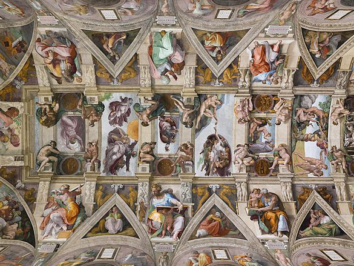

A Criação de Adão é um afresco pintado por Michelangelo entre os anos de 1508 e 1510, a pedido do papa Júlio II. O afresco integra um conjunto de pinturas que compõem o teto da Capela Sistina, onde Michelangelo representou várias cenas bíblicas e figuras proféticas.
1 / 4

O corpo lânguido de Adão se reclina, quase incapaz de erguer a mão em direção à poderosa figura de Deus, que se aproxima para lhe transmitir a centelha de vida.
O braço de Adão está dobrado e o seu dedo caído, sinais de fraqueza do homem, por oposição à postura de Deus, com o braço estendido e o dedo esticado, sublinhando o gesto do seu poder criador.
O braço de Adão está dobrado e o seu dedo caído, sinais de fraqueza do homem, por oposição à postura de Deus, com o braço estendido e o dedo esticado, sublinhando o gesto do seu poder criador.
2 / 4

O pequeno espaço entre os dedos de ambos é ampliado pelo vazio absoluto entre as figuras, sem nada ao fundo que distraia o olhar. Isso torna a imagem claramente visível para quem olha do chão.
Os membros são simétricos, têm uma constituição muito parecida, fazendo referência à passagem bíblica "Deus criou o homem à sua imagem e semelhança"
Os membros são simétricos, têm uma constituição muito parecida, fazendo referência à passagem bíblica "Deus criou o homem à sua imagem e semelhança"
3 / 4

A semelhança entre o manto em que Deus está envolto ao cérebro humano faz uma homenagem à racionalidade humana.Essa escolha teve como base a ideologia humanista e antropocêntrica, que eram os pensamentos vigentes na época.
4 / 4